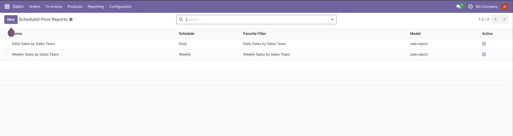
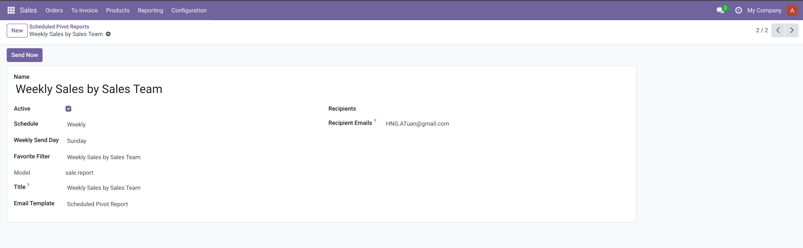
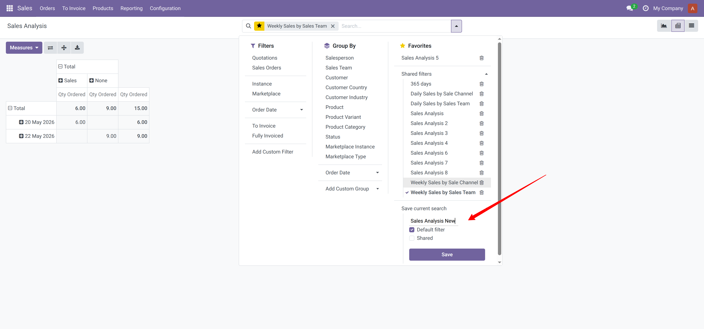
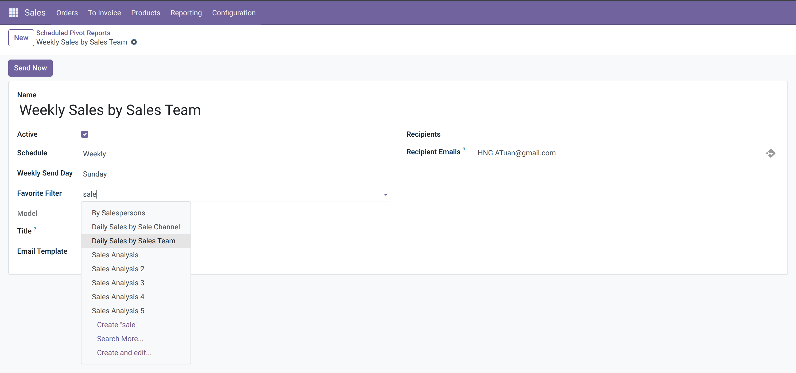
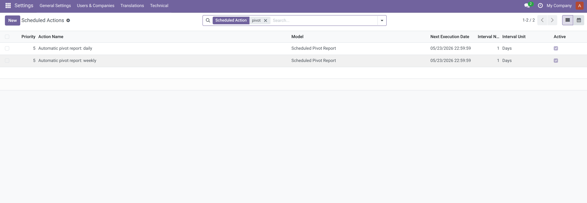
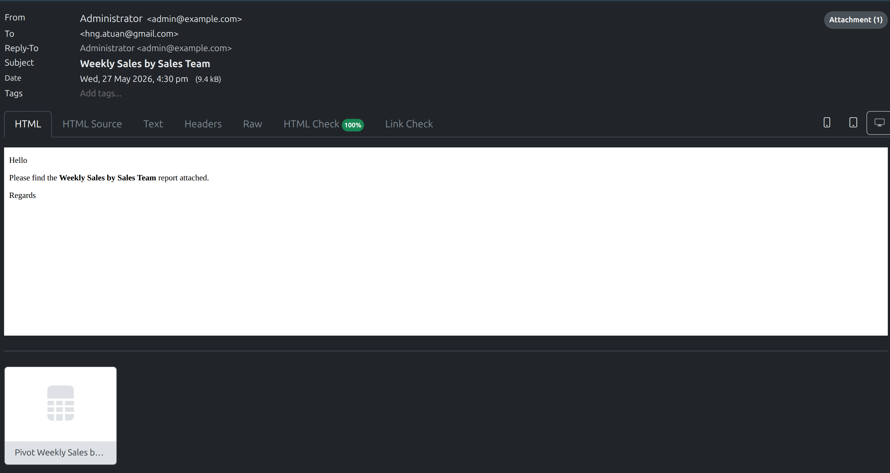

Schedule saved Odoo pivot reports and send them by email as XLSX attachments.
This module lets users configure daily or weekly scheduled reports from existing pivot favorites stored in ir.filters. The scheduler reads the favorite domain, row groupbys, column groupbys, and pivot measures, then builds an XLSX file that follows Odoo's standard pivot export layout.
Table of contents
Create or reuse an Odoo favorite from a pivot report. The favorite should contain the pivot context keys used by Odoo, for example:
{
'pivot_row_groupby': ['date:day'],
'pivot_column_groupby': ['team_id'],
'pivot_measures': ['product_uom_qty'],
}
Then create a scheduled pivot report and select:
The list view shows all configured scheduled pivot reports. From here you can see the report name, schedule, favorite filter, model, and active status.

Use the form view to configure one scheduled report. Select the favorite filter, schedule, recipients, and email template. Use the Send Now button to test the report manually.

Create an ir.filters favorite from an Odoo pivot report.

Create a scheduled pivot report and select the favorite filter from the previous step.

Automatic sending: the daily and weekly cron jobs scan active scheduled pivot reports matching their schedule and send the emails automatically.

Manual sending: open a scheduled pivot report and click Send Now.
Result: recipients receive an email with the generated XLSX report attached.

The report data is generated server-side with Odoo ORM read_group calls. Totals are queried at their own grouping level so non-additive measures, such as averages, match Odoo pivot behavior more closely than summing child cells.
The included data records are examples and can be replaced with your own saved favorite filters and scheduled report records.